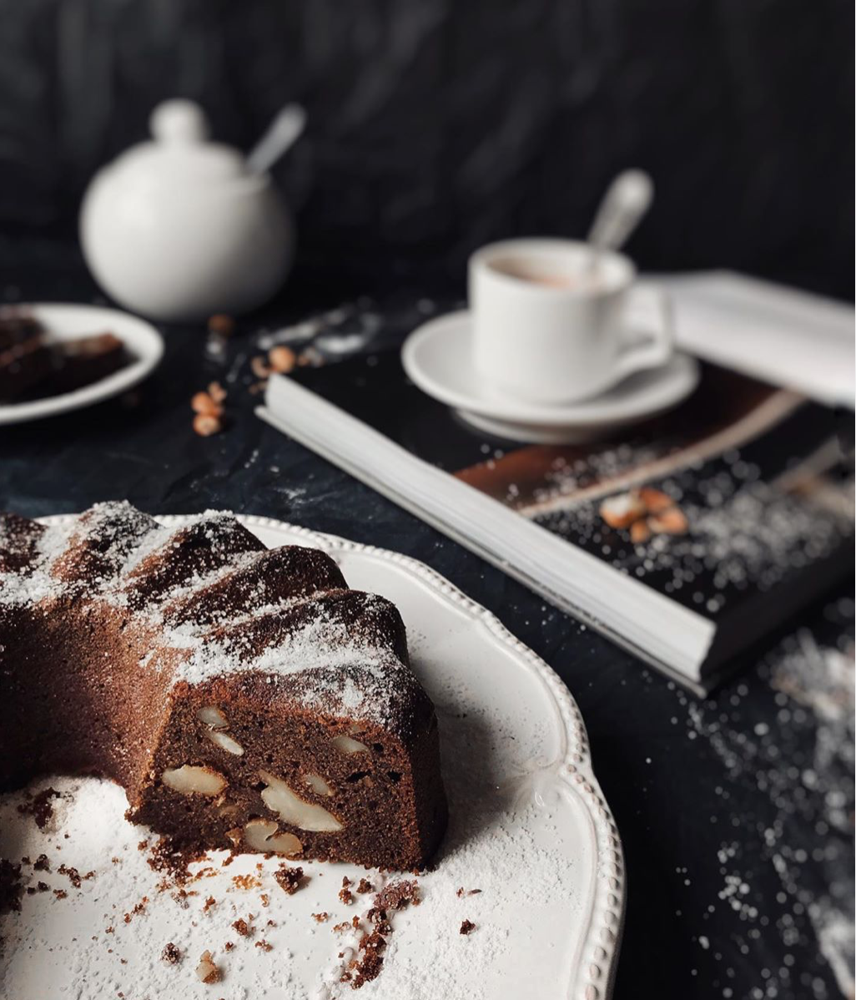
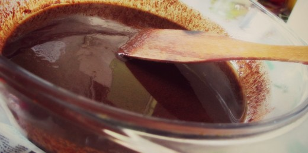

Шоколадный брауни |
|
|  |
Ингридиенты
|
| Приготовление: 30-40 минут при температуре 180 градусов | Рецепт на 1 порцию |
|
ОПИСАНИЕ Брауни – это знаменитые американские пирожные с насыщенным шоколадным вкусом и слегка тягучей констистенцией. |
|
|
Шаг 1 Яблоки очищаем, режем на кубики и тушим их с сахаром или медом с небольшим кусочком ливочного масла чтоб яблоки стали мягкие. Затем взбиваем блендером в пюре.  |
|